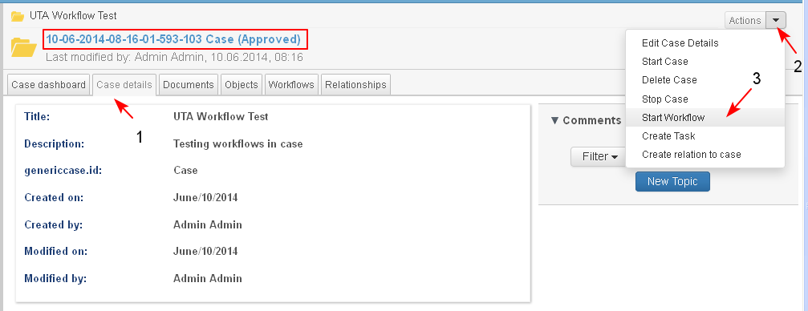
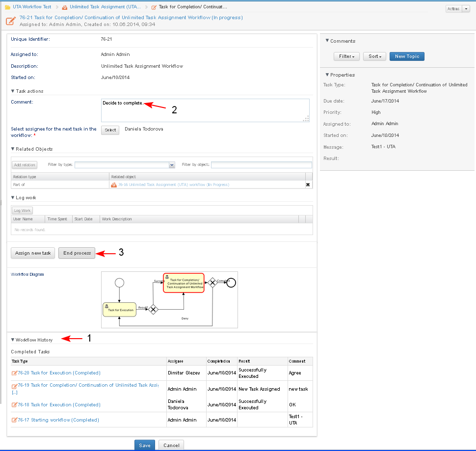

The Unlimited Task Assignment (UTA) workflow allows the execution of unlimited number of tasks within the workflow. The number of tasks to be executed is determined by the user who has started the workflow and only he/ she can complete it.
After the execution of each assigned task, the originator (the user who has started the workflow) receives a task and may choose to complete the workflow or assign a new task.
For each task the originator selects an assignee (any user may be selected), enters a description, execution time and priority.
It is possible for the originator to start the workflow and assign tasks also to himself/ herself.
In the description of the workflow only the specific behavior of the tasks in the process is described. The result from actions like "Reassign Task" (typical for all tasks) and "Complete a Workflow" which are standard actions is not described here.
Preconditions
The user has permissions to start a workflow for a case.
The workflow of type Unlimited Task Assignment Workflow (UTA) has the same metadata attributes as all other workflows. The details of the workflow and of the tasks may be reviewed by all users who have relevant permissions.
The Workflow Diagram of the process is:

1. The originator starts an Unlimited Task Assignment Workflow (UTA)
- The user starts the action "Start workflow" from:
- Case Dashboard/ Workflows dashlet/ Actions/ Start Workflow
- Page Case details/ Actions/ Start Workflow (1-2-3) for the case where he/ she wants to begin a workflow.

- The system opens the screen for selecting the workflow type. The user selects the type from the drop down menu (1-2).

- The system opens the screen for entering data for the metadata details of the workflow. The user must fill in data in all mandatory fields. He/ she should select an assignee of the first task.

- The system opens the screen for selecting user from the list. There is a search field for easier navigation (1). The originator selects the assignee for the first task (2-3).

- The selected user is moved to the right (1). There is a button "-" (2) for removing the selected user from the list. The originator clicks the button "Save" (3).

- The selected assignee is added in the start workflow page (1). The originator enters a Comment, due date, selects priority of the workflow from a drop down list (2-3-4) and clicks the button "Start Workflow" (5).

- The Case Dashboard opens (1):
- A workflow in state "In progress" is created (2). It appears in the Workflows dashlet in the Case Dashboard. The possible actions that may be performed on that workflow by the current user are visible in the Actions list (3-4).
- A task of type "Task for Execution" with the entered comments is generated and sent to the selected assignee (5). It appears in the Tasks dashlet in the Case Dashboard. The possible actions that may be performed on that task by the current user are visible in the Actions list of the task (6-7).

2. The assignee receives a task of type "Task for Execution"
The "Task for Execution" has the same typical metadata attributes as all other tasks.
- The assignee of the "Task for Execution" opens it from his/ her personal dashboard (1-2) for preview and edit.

- The system opens the task.
- The task status changes to "In Progress" (1).
- In section Related Objects appear the relation of the workflow with the case (2).
- On the workflow Diagram with red color is visualized the current stage in the process (3).
- In the Workflow History section the completed tasks may be reviewed (4).
- The user may change the task status to "On Hold" by selecting the corresponding action("Suspend Task") from the list of available actions (5).
- The user enters a Comment on the task and chooses to complete the task. There are two options:
- entering new topic in Comments section (6)
- entering comment in the field "Comment" (7) which will appear in the workflow history section
- Selecting the button "Task done" (8) - the task is completed with the result "Successfully Executed".
- Selecting the button "Cancel" (9) (because for some reason the user could not complete the task) - the task is completed with the result"Execution Rejected". In this case the field "Comments" in the task is mandatory and the user should enter in plain text the reasons for rejection.

2.1 The assignee completes the task
The user chooses to complete the task and clicks the button "Task done" :
- The task state changes to "Completed".
- The outcome of the task is set to "Successfully Executed".
- A new task of type "Task for Completion/ Continuation of UTA WF" is generated and sent to the originator of the workflow.
- A message "Task for Completion/ Continuation of UTA WF is assigned to <name of user>" is displayed to the user who completed the task.
2.2 The assignee rejects the completion of the task
The user chooses to reject the execution of the task and clicks the button "Cancel":
- The task state changes to "Rejected".
- The outcome of the task is set to "Execution Rejected".
- A new task of type "Task for Completion/ Continuation of UTA WF" is generated and sent to the originator of the workflow.
- A message "Task for Completion/Continuation of UTA WF is assigned to <name of user>" is displayed to the user who completed the task.
- After completion of the task, the system opens the Case dashboard where the new task assigned to the originator of the workflow is visible.

3. The originator receives a task of type "Task for Completion/ Continuation of UTA WF"
The task for Completion/ Continuation of UTA Workflow has all standard attributes of a task.
- The originator of the workflow opens the "Task for Completion/ Continuation of UTA WF" for preview and edit. The task status changes to "In Progress" (1).
- The user is allowed to:
- change the task state to "On Hold" by selecting the corresponding action
- enter a Comment on the task (2)
- select the assignee of the next task (3)
- complete the task selecting one of the options:
- Selecting the button "Assign New Task" (4) - the task is completed with the result "New Task Assigned".
- Selecting the button"End Process" (5)- the task is completed with the result "Workflow Completed". The workflow is completed. The status of the workflow is changed to "Completed".

3.1 The originator decides to continue the workflow
- The originator enters a Comment, selects an assignee for the new task from the list and clicks the button "Assign New Task".
The system checks whether an assignee of the task has been selected and a Comment on the task is entered.
- If for any of these fields data is missing, a message "Please select an assignee and enter comments on the task" is displayed.
- If in both fields data is available, a message "Task for Execution will be assigned to <name of user> Yes/ No" is displayed and the user may confirm or cancel and change the assignee and/ or the comments.
- The user confirms the assignment of the new task:
- A task of type "Task for Execution" is generated and send to the selected assignee.
- The task of type "Task for Completion/ Continuation of Workflow" is completed with status "Completed".
- The result (outcome) of the task is "New Task Assigned".
3.2 The originator decides to complete the workflow
- The originator reviews the workflow history (1) and the comments of the completed tasks, enters a Comment (2) and clicks the button "End Process" (3).

- The system opens the case dashboard. The user opens the completed workflow for review (1-2).

- The workflow details page opens:
- The workflow is completed (1/2)
- No current tasks are visible in the Current Tasks section.
- The task is completed with status "Completed". The result of the task is "Workflow Complete". The user may review the result and comment of each completed task (3-4).